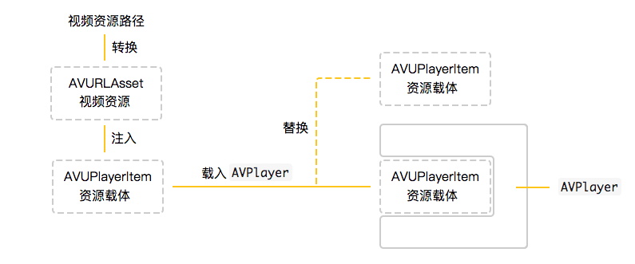

上一篇写完抖音Object-C版，这一篇写Swift版。 Swift版代码逻辑大致与Object-C版一致，只是采用了不同的第三方库。 除此之外，难得有机会使用Object-C和Swift写同样的功能，顺便总结一下两者在进行iOS开发的异同。
Object-C语言相比其他语言要复杂许多，对初学者不太友好，这也是是苹果大力推行Swift语言的原因。Swift其实是基于Object-C进行包装，为开发者提供便利的开发语言，很多设计理念都是一样的，从Object-C转Swift开发，或者从Swift转Object-C开发其实并没有很大的难度。这篇文章的抖音demo则使用Swift语言编写，源码地址请点击这里。本文属于原创，未经允许禁止转载。
展示图如下所示，图片来自抖音demo的屏幕录制，包含抖音个人主页、滑动播放视频列表、IM即时聊天等界面。


本项目共分为三个部分。第一部分为抖音个人主页实现，包含OperationQueue多队列解析webp动图、网络资源二级缓存框架搭建。第二部分围绕AVPlayerLayer展开，涉及网络视频边播放边下载、UITableView控制多个视频源播放。第三部分则为WebSocket实现IM即时聊天，其中穿插文本计算、表情编辑等功能。三个部分都涉及网络请求、json数据模型转换以及手势、动画效果处理。项目文件结构则如下图所示：
移动端界面的呈现离不开各种图片资源，为了更好的还原抖音的部分功能，少不了获取抖音app相应的切图文件。iOS app的切图资源与Android app一样，都在打包时安置在安装包内，使用工具即可提取切图资源。iOS端则使用iTunes获取切图资源，步骤如下：
这里的iTunes分为Mac客户端和Windows端，Mac端目前最新版本是12.8，而12.6版本以后就不支持ipa包下载，所以在Mac端获取ipa安装包需要先删除当前安装的iTunes，再安装iTunes12.6之前的版本，而就目前Mac权限来说，删除iTunes并不是像删除普通Mac应用一样简单，一不小心会导致iTunes无法正常运行，所以不推荐在Mac端删除再安装低版本。不过iTunes Windows版本就不存在无法获取ipa包的问题，所以建议使用Windows系统安装iTunes获取ipa安装包。
注意要先登录apple账户，在iTunes菜单栏选择"应用"一栏，然后在搜索框中搜索"抖音"，点击获取，下载完毕后会在资料库中显示抖音app的图标，最后右击app图标选择"在资源管理器中显示"即可看到抖音ipa安装包。这里是Windows系统上的步骤，Mac上操作步骤类似。
这里在Mac系统上进行，首先解压抖音ipa安装包，打开解压后的文件夹→Payload，可以看到Aweme.app文件，选中Aweme.app并右击选择"显示包内容"，即可看到部分图片资源。但是远远不够，这里只包含一小部分图片资源，大部分其他资源被压缩到了Assets.car文件中，.car文件解压需要使用相关工具，这里推荐使用cartool。
对于移动端开发者来说，并不是每个项目都有机会可以直接接触到后端代码，所以进行网络请求调试时，借助Charles、Fiddler、Wireshark等测试工具对请求进行抓包分析，将使请求细节清晰明了的展现在开发者眼前，降低开发者的调试难度。除此之外，对他人开发的app网络请求进行抓包分析也有助于学习其API架构思路。在这里我们则使用Charles分析抖音app的API设计并获取相应的json请求数据，用来搭建本项目所需使用到的网络请求API。
抓包步骤：电脑端安装Charles并打开，然后打开需要进行网络请求抓包的移动设备，选择设置→无限局域网→"当前连接的网络名称"→蓝色感叹号图标→配置代理→手动，服务器一栏填入电脑端的ip地址，端口填写8888(Charles默认端口，可修改)，最后点击保存即可进行抓包分析。HTTPS请求抓包则需在移动端浏览器打开chls.pro/ssl地址并安装证书即可，注意需要在移动端设备设置了代理的情况下进行。
如下图所显示，我们便获取了抖音所调用的网络请求接口数据，根据这些接口数据搭建了本项目所使用的网络请求API。
抖音demo的数据来自Charles抓包，这些数据被抓取后存储在抖音demo对应的服务器数据库中，以这些数据为基础搭建了抖音demo中的网络请求API，网络请求数据返回格式为json，所有接口返回的json数据结构如下所示：
{
"code": 0, //请求返回码，0表示请求成功，其他表示失败
"message": "success", //请求返回信息
"data": {
... //data数据为任意对象的json格式数据，可以为单一对象、数组，也可为空值
}
//当分页请求数据时才会返回的参数
"total_count": 40, //总数据量
"has_more": 0 //是否还有更多数据，0为没有，1为有
}
抖音demo基本请求路径为：http://116.62.9.17:8080/douyin，接口类型分为访客用户、抖音用户、短视频列表、群聊、评论五类，参数等信息如下所示：
每个客户端在启动项目app后，会根据当前设备的udid(Unique Device Identifier设备唯一标识符)注册访客用户，生成的访客用户可以使用群聊以及评论视频等功能。
| 类别 | URL | 功能 | 请求方式 | 参数 |
|---|---|---|---|---|
| 访客用户 | visitor/create | 创建访客用户接口 | POST | udid |
抖音用户是通过Charles抓取到到抖音用户json数据，是真实存在的抖音用户，根据id可查询，抖音demo的个人主页信息则是以我的抖音数据填充的。
| 类别 | URL | 功能 | 请求方式 | 参数 |
|---|---|---|---|---|
| 抖音用户 | user | 根据用户id获取用户信息 | GET | id |
短视频列表数据也是通过Charles抓取并保存在服务器数据库中的，但是数据中的视频、头像等资源路径调取的是抖音原始服务器路径。
| 类别 | URL | 功能 | 请求方式 | 参数 |
|---|---|---|---|---|
| 短视频 | aweme/favorite | 获取用户发布的短视频列表数据 | GET | uid、page、size |
| aweme/post | 获取用户喜欢的短视频列表数据 | GET | uid、page、size |
原计划根据抖音聊天界面实现一对一聊天，考虑到demo结构的简洁度以及便于使用该demo的用户进行即时聊天测试，就将一对一聊天改为群聊。一对一聊天和群聊两者就实现原理来讲，区别仅仅是服务器向指定单个客户端发送消息和像多个客户端发送消息。群聊API包括发送文本、图片消息以及获取消息列表和删除指定消息等。
| 类别 | URL | 功能 | 请求方式 | 参数 |
|---|---|---|---|---|
| 群聊 | groupchat/text | 发送文本类型群聊消息 | POST | udid、text |
| groupchat/image | 发送单张图片类型群聊消息 | POST | udid、FormData图片数据 | |
| groupchat/images | 发送多张图片类型群聊消息 | POST | udid、FormData图片数据 | |
| groupchat/image | 分页获取群聊列表 | GET | 图片id | |
| groupchat/list | 根据id获取指定图片 | GET | page、size | |
| groupchat/delete | 根据id删除指定群聊消息 | DELETE | udid、消息id | |
| groupchat | 消息主动推送 | WebSocket | groupchat json 字符串 |
评论分为抖音用户评论数据和访客用户评论数据，抖音用户评论数据来自Charles抓包，访客用户可自由对视频进行评论。
| 类别 | URL | 功能 | 请求方式 | 参数 |
|---|---|---|---|---|
| 评论 | comment/post | 根据视频id发送评论 | POST | aweme_id、udid、text |
| comment/delete | 根据id删除评论 | DELETE | cid、udid | |
| comment/list | 获取分页评论列表 | GET | aweme_id、page、size |
Alamofire和AFNetworking框架是由相同的开发者编写的，只不过前者基于Swift语言编写，后者基于Object-C。在本项目的Network文件夹中，NetworkManager文件根据项目需求封装了Get、Post、Delete等类型的请求，接口的请求参数由Model对象转为NSDictionary字典类，返回的请求数据统一格式为上一节介绍的基本json结构，基本json结构对应的模型为BaseResponse类。当服务器无法即时响应请求时，会启用本地数据进行响应，本地数据见Resource包下的json文件。
网络请求以json数据返回，iOS原生支持json数据转换为Dictionary字典类型，但在开发时我们通常将json数据转换为指定对象，方便后续调用。这时使用HandyJSON可以高效的将json数据转换为指定Model对象。除此之外，网络请求需要传递一系列的参数，这些参数在iOS开发层面是以Data或Dictionary进行传递，这里我们将每个请求封装为BaseRequest子类，BaseRequest继承自HandyJSON，方便将网络请求类转换为Dictionary类型。
iOS纯代码编写布局可以通过设置各种constraint约束来到达不同的布局效果，Apple原生提供的约束布局相对来说过于繁杂，不利于开发者调用。因此出现了各种基于原生constraint约束封装的布局开源框架，这些框架对原生代码进行高度封装，提供各类便于开发者调用的接口。Snapkit是Swift语言普遍使用的框架之一，Object-C语言则是Masonry框架。
Starscream是一套实现WebSocket框架，依照Websocket协议，支持ws、wss传输协议，并提供各种消息发送接收方法，在抖音demo中用来实现服务器主动推送消息给客户端的功能——IM即时聊天。
webp格式是由Google发展出的一种图片文件格式。这种格式不仅可以显示单图，还能高效显示由一系列图片构成的动图。除此之外，webp格式的图片相较于其他类型的图片格式，可以一定程度的减少文件大小。libwebp库则提供了基于C语言解码webp格式的基础API，目前比较有知名度的图片开源框架SDWebImage、YYImage都是基于此库对webp格式进行解码。抖音demo则根据需求结合libwebp库自行实现了webp格式数据的解码。
以上5个第三方库由Cocoapods进行管理，pod文件如下所示：
target 'Douyin' do
pod 'Alamofire'
pod 'HandyJSON'
pod 'SnapKit'
pod 'Starscream'
pod 'libwebp'
end
Swift作为苹果大力推行的iOS开发语言，相比于Object-C，很大程度降低了开发者的开发难度，这节就列举一下 Swift和Object-C的不同之处。
Swift语言其实是基于Object-C进行了一层包装，其本质还是调用Object-C，只是在语法上更加便于开发者理解、调用。因此相较于Object-C语言，在编译这一步会消耗更多时间。不过，在Xcode9.0以后，Swift项目的编译速度明显提升，且错误、警告、方法提示等出现等速度也明显快了许多，Swift语言一年比一年成熟这是毋庸置疑的。
Object-C新定义一个类时需要同时创建.h文件和.m文件，.h文件进行方法属性的一些申明.m文件则对头文件中对方法进行实现或扩展。在Swift中只需要创建.swift文件即可，不区分.h文件和.m文件，方法属性都在.swift文件中申明，使用Swift语言开发iOS项目，项目文件总数量直接减少一半。除此之外，调用同一项目中的文件，不再需要import即可直接调用，避免了文件相互嵌套的情况。
目前大部分的项目依旧使用Object-C语言进行开发，尤其是大厂，项目庞大且繁杂，如果直接使用Swift语言重新开发难度较大，且Swift语言每一个版本变动都较大，使用起来有一定的风险。尽管有诸多问题，但是Swift作为苹果大力推行都开发语言，在未来普及是趋势。因此使用Object-C和Swift混合编译也不失为一种好的选择。
Object-C调用Swift就和调用普通Object-C文件一样简单，importSwift文件即可。Swift调用Object-C则需要调用通过一个.h文件作为桥接，把需要调用的Object-C文件import进桥接文件，这样Object-C文件就和Swift文件一样可以自由调用了。在抖音demo中，则创建了Douyin+bridging+Header.h文件作为桥接文件，桥接了WebPImage类文件。
Swift语法风格相较于Object-C更为简单也更为贴近其他开发语言，使用点号代替中括号调用类方法、属性，省略冒号作为每行代码分隔符，每次版本更新后方法名变得越来越简练，代码长度越来越短。总体除了下面要说的Swift安全性和可选择性以外，大部分设计理念于Object-C相同，因此方法调用上两者仅仅是风格上的区别。
Swift3.0新增了安全特性，简单来说就是保护代码不因为调用空值导致崩溃，比如调用处理图片的API时返回的数据可能是空值，这时Swift的安全特性就会提示需要判断或者使用默认值进行替代。这个虽然刚开始接触时，感觉增加了代码的复杂程度，但是在不同场景上的确可以为代码可能出现的奔溃情况作出及时的防护，这也是Object-C不具有的特性。
在Object-C中进行对类进行扩展有两种方法，一种是在定义类文件中进行一个匿名扩展，一种是使用Catagory在类以外的文件中对类进行指定扩展名的扩展。其实这两者合并起来也未尝不可，于是在Swift语法中就没有Extension和Category之分了，统一都是使用extension对类进行扩展，这样不但简化了语法还使结构变得更加清晰。
抖音个人主页部分包含
OperationQueue多队列解析webp动图、网络资源二级缓存框架搭建。布局则以UICollectioinView为父容器，用于显示个人详细信息、多行多列webp格式动图。
抖音个人主页包含用户信息和用户发布、喜欢的视频列表，以UICollectioinView为父容器即可全部显示。UICollectioinView包含两个section，第一个section包含一个Header和一个Footer，Header用于显示用户头像、昵称等详细信息，Footer则用于切换"作品"与"喜欢"两个tab，第二个section则用于显示短视频webp格式等动图列表。
个人主页调用了获取用户详情接口，获取用户发布、喜欢的短视频列表数据接口，接口详情如下：
URL：http://116.62.9.17:8080/douyin/user，参数为uid，json返回的详细数据参看user.json，user.json对应的模型类为项目Entity包下的User类，以下为用于显示抖音用户个人主页的user数据结构：
{
"uid": "97795069353", //用户id
"short_id": "881305406", //用户抖音号
"nickname": "QSHI", //用户昵称
"gender": 2, //用户性别
"constellation": 7, //用户星座
"follower_count": 0, //用户粉丝数量
"following_count": 9, //用户关注数量
"aweme_count": 0, //用户发布的短视频数量
"favoriting_count": 203, //用户喜欢的短视频数量
"avatar_larger": { //用户头像大图网络地址
"url_list": [
"https://p3.pstatp.com/aweme/1080x1080/93d80025827f14085d5a.jpeg",
...
],
"uri": "93d80025827f14085d5a"
},
"avatar_thumb": { //用户头像缩略图网络地址
...
},
"avatar_medium": { //用户头像中图网络地址
...
},
...
}
URL：http://116.62.9.17:8080/douyin/aweme/post，参数为uid、page、size，数据分页返回，json返回的详细数据参看awemes.json，awemes.json对应的模型类为项目Entity包下的Aweme.h类，抖音App命名"Aweme"为一个短视频模型，这个模型主要由Video、Music、Author等模型组成，以下为每个短视频"Aweme"的json数据结构：
{
aweme_id: 6553217298029612295, //短视频id
desc: "我想恋爱了", //短视频描述信息
author_user_id: 61946151784, //短视发布作者用户id
rate: 12, //音乐播放速度
video: {
... //短视频详细信息，详情见下面的video数据结构
},
music: {
... //音乐详细信息，详情见下面的music数据结构
},
author: {
... //视频作者详细信息，其本质就是用户信息，上面已经解析了，详情见上面的user数据结构
},
statistics: {
... //短视频详细信息，详情见下面的statistics数据结构
}
...
}
video数据结构：
{
"play_addr": { //短视频播放网络地址
"url_list": [
"https://aweme.snssdk.com/aweme/v1/play/?video_id=v0200f390000bbor7dmj5ugugo3832cg&line=0&ratio=720p&media_type=4&vr_type=0&test_cdn=None&improve_bitrate=0",
...
],
"uri": "v0200f390000bbor7dmj5ugugo3832cg"
},
"play_addr_lowbr": { //短视频低画质播放网络地址
...
},
"origin_cover": { //短视频第一帧原始画面网络地址
...
},
"cover": { //短视频第一帧压缩画面网络地址
...
},
"download_addr": { //短视频下载地址
...
},
"dynamic_cover": { //短视频webp格式动图网络地址
...
}
}
music数据结构：
{
"id": 6533505360412543757, //歌曲 id
"author": "Monogem", //作者名字
"title": "Wild", //歌曲名字
"cover_large": { //音乐封面大图网络地址
"url_list": [
"http://p3.pstatp.com/live/720x720/6f850011ba6939f4379d.jpeg"
],
"uri": "6f850011ba6939f4379d"
},
"cover_thumb": { //音乐封面缩略图片地址
...
},
"cover_hd": { //音乐封面高清图片网络地址
...
},
"cover_medium": { //音乐封面中等画质图片网络地址
...
},
"play_url": { //音乐播放网络地址
...
},
...
}
statistics数据结构：
{
"aweme_id": "6553217298029612295", //视频id
"play_count": 48138538, //视频播放数量
"comment_count": 51202, //视频评论数量
"share_count": 75606, //视频分享数量
"digg_count": 2295822 //视频喜欢数量
}
URL：http://116.62.9.17:8080/douyin/aweme/favorite，参数为uid、page、size，数据分页返回，json返回的详细数据结构与上面"获取用户发布的短视频列表"数据一致。
通过重写UICollectionViewFlowLayout中的layoutAttributesForElementsInRect方法可以让UICollectionView显示诸如瀑布流、水平流动布局等各种样式的布局。其原理就是layoutAttributesForElementsInRect方法本身返回的是UICollectionView中每个元素的属性，属性中就包含元素的frame信息，通过修改frame值即可改变每个元素显示的位置，这里的元素类型分为Header、Footer、Cell，判断元素类型可将不同元素进行区分。
现在我们可以看到抖音个人主页在向上滑动时，第一个section滑动到导航栏底部时便固定位置不再上移。实现这个效果就需要将第一个section中的元素提取出来单独处理frame值。之前也介绍了，第一个section包含一个Header和一个Footer，Header用于显示用户详细信息，Footer则用于显示切换"作品"和"喜欢"的Tab栏，因此只需判断是否是第一个section的Header和Footer并修改frame值即可实现固定效果，具体代码如下：
//重写layoutAttributesForElementsInRect方法
override func layoutAttributesForElements(in rect: CGRect) -> [UICollectionViewLayoutAttributes]? {
var superArray:[UICollectionViewLayoutAttributes] = super.layoutAttributesForElements(in: rect)!
//移除掉所有Header和Footer类型的元素，因为抖音个人主页中只有第一个section包含Header和Footer类型元素，即移除需要固定的Header和Footer，因为后续会单独添加，为了避免重复处理。
let copyArray = superArray
for index in 0..<copyArray.count {
let attributes = copyArray[index]
if attributes.representedElementKind == UICollectionElementKindSectionHeader || attributes.representedElementKind == UICollectionElementKindSectionFooter {
if let idx = superArray.index(of: attributes) {
superArray.remove(at: idx)
}
}
}
//单独添加上一步移除的Header和Footer，单独添加是因为第一步只能获取当前在屏幕rect中显示的元素属性，当第一个Sectioin移除屏幕便无法获取Header和Footer，这是需要单独添加Header和Footer以及第二部单独移除Header和Footer的原因。
if let header = super.layoutAttributesForSupplementaryView(ofKind: UICollectionElementKindSectionHeader, at: IndexPath.init(item: 0, section: 0)) {
superArray.append(header)
}
if let footer = super.layoutAttributesForSupplementaryView(ofKind: UICollectionElementKindSectionFooter, at: IndexPath.init(item: 0, section: 0)) {
superArray.append(footer)
}
//循环当前获取的元素
for attributes in superArray {
//判断是否是第一个section
if attributes.indexPath.section == 0 {
//判断是否为Header类型
if attributes.representedElementKind == UICollectionElementKindSectionHeader {
//获取Header的Frame
var rect = attributes.frame
//判断Header的bottom是否滑动到导航栏下方
if (self.collectionView?.contentOffset.y)! + self.navHeight - rect.size.height > rect.origin.y {
//修改Header frame的y值
rect.origin.y = (self.collectionView?.contentOffset.y)! + self.navHeight - rect.size.height
attributes.frame = rect
}
//设施Header层级，保证Header显示时不被其它cell覆盖
attributes.zIndex = 5
}
//判断是否为Footer类型
if attributes.representedElementKind == UICollectionElementKindSectionFooter {
//获取Footer的Frame
var rect = attributes.frame
//判断Footer的top是否滑动到导航栏下方
if (self.collectionView?.contentOffset.y)! + self.navHeight > rect.origin.y {
//修改Footer frame的y值
rect.origin.y = (self.collectionView?.contentOffset.y)! + self.navHeight
attributes.frame = rect
}
//设施Footer层级，保证Footer显示时不被其它cell覆盖，同时显示在Header之上
attributes.zIndex = 10
}
}
}
//返回修改后的元素属性
return superArray
}
//重写shouldInvalidateLayoutForBoundsChange方法
override func shouldInvalidateLayout(forBoundsChange newBounds: CGRect) -> Bool {
return true
}
抖音个人主页在到达顶部后持续下拉，背景图片会同时逐渐出现放大的效果，类似这种效果除了抖音，在微博、微信等iOS app端都有类似使用。
UIScrollView的bounce属性设置为true后，UIScrollView及其子类都会有在滑动到顶部和底部时出现弹簧拉伸效果，UICollectionView、UITableView都继承自UIScrollView，所以也有bounce属性。实现抖音个人主页的拉伸效果的代码片段如下：
//实现UIScrollViewDelegate中的scrollViewDidScroll方法
func scrollViewDidScroll(_ scrollView: UIScrollView) {
//获取当前控件y方向的偏移量
let offsetY = scrollView.contentOffset.y
if offsetY < 0 {
userInfoHeader?.overScrollAction(offsetY: offsetY)
}
}
func overScrollAction(offsetY:CGFloat) {
//计算背景容器缩放比例
let scaleRatio:CGFloat = fabs(offsetY)/370.0
//计算容器缩放后y方向的偏移量
let overScaleHeight:CGFloat = (370.0 * scaleRatio)/2.0
//缩放同时平移背景容器
avatarBackground.transform = CGAffineTransform.init(scaleX: scaleRatio + 1.0, y: scaleRatio + 1.0).concatenating(CGAffineTransform.init(translationX: 0, y: -overScaleHeight))
}
webp格式是由Google发展出的一种图片文件格式，支持单图、动图，且所需文件大小小于其它格式的图片文件。libwebp库则提供了基于C语言解码webp格式的基础API，目前比较有知名度的图片开源框架SDWebImage、YYImage都是基于此库对webp格式进行解码。虽然SDWebImage、YYImage都是基于libwebp库支持webp格式解码，但是就表现情况而言，不能很好的支持抖音主页多动图显示需要的效果。
SDWebImage一个线程一次性解压一张webp动图，而抖音通过短视频生成的每个webp动图共有9帧，可以理解为有9张图片，也就是说SDWebImage相当于一个线程一次性解压9张图片，然后再将所有图片返回给UIImageView用于展示。根据真机测试每帧画面通过libwebp提供的解码API需要0.05-0.01s的时间，9帧则近乎需要0.5-1.0s的时间，对于像抖音个人主页这样需要快速显示多张webp格式动图的界面，SDWebImage并不是一个很好的选择。除了显示慢以外，SDWebImage用于解码webp动图的线程会占用资源，导致同时期生成的网络请求响应缓慢。
YYImage则是边解码边显示，就显示速度而言，优于SDWebImage，但这只是在需要同时加载的webp格式图片不太多的情况下，当处理向抖音这种需要同时加载十几张甚至更多的情况时，YYImage的表现力就不那么优秀了，会出现明显掉帧卡顿的现象，除此之外和SDWebImage同样有线程占用资源导致网络请求响应缓慢的情况发生。
基于以上原因，我们需要基于libwebp库自行封装一个用于解码webp格式的类，该类可以边解码边显示大量webp动图，同时不会与网络请求线程进行资源抢占，具体涉及4个类：
负责调用libwebp库提供的解码webp格式图片API，继承自UIImage。解码webp的思路是先将每帧画面的大小、时长等信息先存储在数组中，再提供解压指定画面的方法，WebPImage类依旧是使用Object-C编写，通过Douyin+bridging+Header.h文件进行桥接。
WebPQueueManager是用于管理多队列并发执行的类，为避免同时并发开启太多的队列导致解码时画面卡顿。
专门用于解码webp画面的类，继承自Operation。
WebPImageView是负责显示WebPImage解码后的画面的控件，继承自UIImageView。WebPImageView添加解码webp画面的WebPImageOperation任务，并使用CADisplayLink保证在每帧时长间隔后刷新画面，每个WebPImageView都有一个用于专门解码webp第一帧画面的OperationQueue，和一个用于解码剩余图片的OperationQueue。两个OperationQueue的区别是前者优先级高，便于快速反馈webp画面从而避免线程资源占用导致画面空白的现象，后者的优先级低，这样避免了有网络请求的情况下由于资源占用导致导致数据响应延迟的现象。
这几个类之间的关系如下图所示：
二级缓存包含内存缓存和磁盘缓存，大部分第三方缓存框架都包含这两层缓存。在iOS开发中，通常内存缓存使用NSCache实现，磁盘缓存则是将数据以文件的形式存储在沙盒的文件夹中。
网络资源二级缓存思路：以网络资源路径进行md5签名，生成唯一的字符串作为key值，根据这个key值查找NSCache内存缓存中是否存在数据，没有则在磁盘缓存——沙盒中查找是否存在以key值为文件名的文件，如果两者都没有缓存数据则下载网络资源，资源下载成功后再以网络资源路径的md5值作为key值，将数据缓存进内存缓存和磁盘缓存中。在抖音demo中封装WebCacheHelper类实现网络视频资源、图片资源二级缓存，WebCacheHelper包含以下几个类：
用于管理缓存的类，主要包含NSCache内存缓存、磁盘缓存数据查找，以及数据进行内存存储、磁盘存储等功能。
结合URLSession处理网络资源下载任务，继承自Operation。
网络资源下载器，使用并发队列管理上面的WebDownloadOperation任务。
由查询二级缓存的Operation任务和用于下载资源的WebDownloadOperation任务组成，方便后续取消任务。
这几个类之间的关系如下图所示：
抖音短视频采用上下滑动的方式切换视频源，在本项目我们采用
UITableView控件封装每个视频源，每个视频源采用AVPlayerLayer结合AVAssetResourceLoaderDelegate实现边播放边下载视频源。
抖音demo采用UITableView实现上下滑动切换视频的效果，UITableView的重用机制在实现上下滑动切换视频源时，可以很大程度降低创建控件所需要的开销。视频播放则采用AVFoundation框架下的AVPlayerLayer。
抖音视频列表的视频数据与抖音主页webp动图获取接口一致，所以查看抖音列表的视频获取接口详情请参看上一章节。除此之外，每个抖音视频播放页面有"加关注"、"喜欢"、"评论"、"分享"等控件，"加关注"、"喜欢"类型的控件交互效果采用动画效果即可实现，"评论"、"分享"类型的控件与用户进行交互后会从下方弹出弹窗，弹窗通过在UIWindow中添加自定义View来实现悬浮于当前应用界面之上的效果。评论弹窗则包含"获取评论"、"发送评论"、"删除评论"三个接口，具体接口细节如下：
URL：是http://116.62.9.17:8080/douyin/comment/list，参数为aweme_id、page、size，json返回的详细数据参看comments.json，comments.json对应的模型为项目Entity包下的Comment类，以下为抖音视频评论comment的数据结构：
{
"cid": "1600536447291406", //评论id
"aweme_id": "6539722820484599044", //评论对应的aweme id
"digg_count": 3, //用户喜欢数量
"text": "\u597d\u53ef\u7231", //评论内容
"user": {
... //视频用户详细信息，其本质就是用户信息，详情见上面的user数据结构
},
...
}
URL：是http://116.62.9.17:8080/douyin/comment/post，参数为aweme_id、udid、text，json返回数据与第一个接口一致。我们可以看到请求参数包含udid(Unique Device Identifier设备唯一标识符)，前面也有介绍，当用户启动抖音demoe后，demo会获取当前设备当udid，并发送给服务器生成一个访客用户，这样每个用户都可以使用这个访客用户进行"评论"、"群聊"。所以评论用户在抖音demo中包含两种类型，一种是抖音上真实存在的用户，一种是在demo中通过udid生成的用户。因此demo中评论的json会新增"user_type"、"visitor"属性：
{
"cid": "1600536447291406", //评论id
"aweme_id": "6539722820484599044", //评论对应的aweme id
"digg_count": 3, //用户喜欢数量
"text": "\u597d\u53ef\u7231", //评论内容
"user": {
... //视频用户详细信息，其本质就是用户信息，详情见上面的user数据结构
},
"user_type":"visitor", //评论用户类型，"visitor"代表访客用户，"user"代表抖音上的用户
"visitor":{
... //访客用户数据结构，详情见下面的visitor数据结构
},
...
}
visitor数据结构：
{
"uid": "5b4096f8e43d130352e488e7", //访客用户id
"udid": "9f78a27d53d3ddf798a77d331c45e5d2", //使用md5签名后的udid
"avatar_thumbnail": { //服务器根据udid自动生成的头像缩略图
"file_id": "5b4096efe43d130352e488e1", //图片id
"url": "http://...", //图片访问路径
"width": 50, //图片宽度
"height": 50, //图片高度
"type": "image/jpeg" //图片类型
},
"avatar_medium": { //服务器根据udid自动生成的头像中图
...
},
"avatar_large": { //服务器根据udid自动生成的头像大图
...
}
}
URL：http://116.62.9.17:8080/douyin/comment/delete，cid、udid，返回data数据为空。
AVFoundation框架下的AVPlayerLayer是AVPlayer的可视化输出对象，在iOS上使用AVPlayerLayer实现视频播放功能是个不错的选择，通过结合AVAssetResourceLoaderDelegate还可以实现网络视频边下载边播放的效果。抖音demo则封装了AVPlayerView类用于实现AVPlayerLayer边下载边播放。AVPlayerView类涉及如下几个知识点：
AVPlayerLayer、AVPlayer、AVURLAsset、AVPlayerItemAVPlayerLayer是AVPlayer的可视化输出对象，AVPlayer则提供控制视频播放操作的接口，AVURLAsset表示一个视频资源，而AVPlayerItem则作为AVURLAsset视频资源的载体，这个AVPlayerItem载体则作为视频源提供给AVPlayer，AVPlayer通过替换AVPlayerItem来替换视频源，它们之间的关系如下图所示：

使用URLSession下载网络视频，同时通过实现URLSessionTaskDelegate、 URLSessionDataDelegate方法，为视频播放器实时提供播放数据。代理方法如下图所示：
AVAssetResourceLoaderDelegate提供处理来自AVURLAsset资源的加载请求。通俗来说，就是将AVURLAsset资源的指定部分数据不断填充到AVAssetResourceLoaderDelegate方法生成的AVAssetResourceLoadingRequest请求中，被填充的AVAssetResourceLoadingRequest将数据不断提供给视频播放器，以此来实现边加载边播的效果，以下3步尤为重要：
//① 将视频的网络路径的scheme改为其他自定义的scheme类型，http、https这类预留的scheme类型不能使AVAssetResourceLoaderDelegate中的方法回调
self?.sourceURL = self?.sourceURL?.absoluteString.urlScheme(scheme: "streaming")
//️② 设置AVAssetResourceLoaderDelegate代理
self?.urlAsset?.resourceLoader.setDelegate(self, queue: DispatchQueue.main)
//③ 实现AVAssetResourceLoaderDelegate代理方法
func resourceLoader(_ resourceLoader: AVAssetResourceLoader, shouldWaitForLoadingOfRequestedResource loadingRequest: AVAssetResourceLoadingRequest) -> Bool {
//创建网络视频下载请求，以及生成AVAssetResourceLoadingRequest用于加载视频缓存数据
}
func resourceLoader(_ resourceLoader: AVAssetResourceLoader, didCancel loadingRequest: AVAssetResourceLoadingRequest) {
//AVAssetResourceLoadingRequest请求被取消，移除视频加载请求
}
通过了解以上知识点，AVPlayerLayer实现边下载边播放的基本思路大概出来了。简单概括就是，URLSession请求下载网络视频资源，实现URLSessionDataDelegate、URLSessionTaskDelegate中相应方法实时获取下载数据，同时填充到AVAssetResourceLoaderDelegate代理方法中生成的AVAssetResourceLoadingRequest中，最后将数据不断提供给视频源，这就实现了视频边下载边播放的效果。如果需要视频缓存，则在视频下载完毕后保存下载数据到本地即可。实现流程如下图所示：
上一节我们封装了AVPlayerView用于边下载边播放网络视频，抖音通过用户上下滑动界面的交互方式切换视频播放源，这一节我们则介绍通过使用UITableView实现上下滑动自动播放视频源。
UITableView切换视频源由于UITableView继承自UIScrollView的pagingEnabled属性无法灵活的实现分页效果，在抖音demo中我们通过重写UIScrollViewDelegate代理中scrollViewDidEndDragging方法，并结合UITableView的scrollToRowAtIndexPath，实现UITableView上下滑动切换到指定cell的效果，代码如下：
func scrollViewDidEndDragging(_ scrollView: UIScrollView, willDecelerate decelerate: Bool) {
DispatchQueue.main.async {
let translatedPoint = scrollView.panGestureRecognizer.translation(in: scrollView)
scrollView.panGestureRecognizer.isEnabled = false
if translatedPoint.y < -50 && self.currentIndex < (self.data.count - 1) {
self.currentIndex += 1
}
if translatedPoint.y > 50 && self.currentIndex > 0 {
self.currentIndex -= 1
}
UIView.animate(withDuration: 0.15, delay: 0.0, options: .curveEaseOut, animations: {
self.tableView?.scrollToRow(at: IndexPath.init(row: self.currentIndex, section: 0), at: UITableViewScrollPosition.top, animated: false)
}, completion: { finished in
scrollView.panGestureRecognizer.isEnabled = true
})
}
}
注：根据UITableView的重用机制，超出屏幕的cell会复用之前已经创建的cell，抖音的设计是每个cell视频源占满整个屏幕，上下滑动切换cell，因此每滑动两个cell就会进行cell复用，基于这个复用机制我们需要在cell的prepareForReuse方法中做一些必要的准备工作，以避免出现数据、界面错乱的现象。
一句话概括UITableView自动播放当前cell视频源原理，就是每次上下滑动切换cell时，暂停播放其他cell的视频源的同时加载播放当前cell视频源。在抖音demo中通过自定义AVPlayerManager类来管理UITableView中cell的AVPlayer的播放和暂停，代码请查看AVPlayerManager.h和AVPlayerManager.m文件。代码细节如下图所示：
当UITextView进入编辑状态，会弹出软键盘，于此同时UITextView也向上移动悬浮于软键盘之上，这是许多移动端app常见的交互场景。在抖音视频播放界面下方，是用于填写评论的UITextView，触摸这个UITextView进行编辑，UITextView会悬浮于软键盘之上。实现这个效果需要以下3步：
NotificationCenter.default.addObserver(self, selector: #selector(keyboardWillShow(notification:)), name: NSNotification.Name.UIKeyboardWillShow, object: nil)
NotificationCenter.default.addObserver(self, selector: #selector(keyboardWillHide(notification:)), name: NSNotification.Name.UIKeyboardWillHide, object: nil)
extension Notification {
func keyBoardHeight() -> CGFloat {
if let userInfo = self.userInfo {
if let value = userInfo[UIKeyboardFrameEndUserInfoKey] as? NSValue {
let size = value.cgRectValue.size
let orientation = UIApplication.shared.statusBarOrientation
return UIInterfaceOrientationIsLandscape(orientation) ? size.width : size.height
}
}
return 0
}
}
@objc func keyboardWillShow(notification:Notification) {
self.backgroundColor = ColorBlackAlpha40
keyboardHeight = notification.keyBoardHeight()
updateViewFrameAndState()
hoverDelegate?.hoverTextViewStateChange(isHover: true)
}
@objc func keyboardWillHide(notification:Notification) {
self.backgroundColor = ColorClear
keyboardHeight = 0
updateViewFrameAndState()
hoverDelegate?.hoverTextViewStateChange(isHover: false)
}
这里的手势冲突处理主要针对抖音视频播放界面，在抖音视频播放界面包含单击播放暂停、连击显示多个爱心、评论弹框中UITableView评论列表单击与父控件单击动作冲突等。解决方案包括延迟执行手势对应方法、过期取消方法执行、拦截手势事件、判断手势触控范围等。虽然不能概括iOS上所有手势冲突情况，但可作为部分参考。
在视频播放页面，单击可以控制视频的播放和暂停，连击则会显示一连串的大红色爱心💕，单击和连击势必会产生冲突。这里我们通过计算每次用户触按屏幕的时间间隔来判断响应单击还是连击操作，以0.25s为时间间隔分割线，点击第一下后延迟单击播放暂停方法调用，若在0.25s内没有捕获到第二下点击，则调用单击播放暂停方法，反之，则取消还未执行的单击方法，转而执行连击显示爱心方法。随后而来的第三次、第四次点击手势以此类推判断响应那种手势方法。代码片段如下：
//获取点击坐标，用于设置爱心显示位置
let point = sender.location(in: container)
//获取当前时间
let time = CACurrentMediaTime()
//判断当前点击时间与上次点击时间的时间间隔
if (time - lastTapTime) > 0.25 {
//推迟0.25秒执行单击方法
self.perform(#selector(singleTapAction), with: nil, afterDelay: 0.25)
} else {
//取消执行单击方法
NSObject.cancelPreviousPerformRequests(withTarget: self, selector: #selector(singleTapAction), object: nil)
//执行连击显示爱心的方法
showLikeViewAnim(newPoint: point, oldPoint: lastTapPoint)
}
//更新上一次点击位置
lastTapPoint = point
//更新上一次点击时间
lastTapTime = time
UITableView、UICollectionView的didSelectRowAtIndexPath代理方法不响应触摸视频播放页面右侧的评论图标会以弹窗的形式弹出评论列表，弹窗是一个占满全屏的自定义View，评论列表由UITableView构成，占屏幕3/4，居于下方，上方1/4透明。触摸上方透明处自动收起评论弹窗，因此需要在当前父容器控件添加UITapGestureRecognizer，正是这个UITapGestureRecognizer接收了点击事件导致评论列表的didSelectRowAtIndexPath方法无法执行，为解决这个冲突我们需要实现UIGestureRecognizerDelegate中的shouldReceiveTouch方法，通过获取UITouch触摸事件中的控件类型来判断是否接收当前点击事件的方法。代码片段如下：
//① 为当前父容器添加UITapGestureRecognizer并设置UIGestureRecognizerDelegate代理
let tapGestureRecognizer = UITapGestureRecognizer.init(target: self, action: #selector(handleGuesture(sender:)))
tapGestureRecognizer.delegate = self
self.addGestureRecognizer(tapGestureRecognizer)
//② 重写UIGestureRecognizerDelegate中的shouldReceiveTouch方法
func gestureRecognizer(_ gestureRecognizer: UIGestureRecognizer, shouldReceive touch: UITouch) -> Bool {
if NSStringFromClass((touch.view?.superview?.classForCoder)!).contains("CommentListCell") {
return false
} else {
return true
}
}
这种情况在下一章的IM即时通信会界面涉及，也是下方UITextView，编辑状态时悬浮于软键盘之上，这也是自定义控件，内部除了UITextView控件还包含了表情选择器、图片选择器。这个自定义控件像上面的评论列表弹窗一样，也是占满全屏，上方透明、下方显示控件细节。不同的是，这次上方透明出需要根据不同情况判断是否成为响应当前触摸事件的View。当UITextView控件处于编辑状态时，触摸上方透明处收起控件，当控件为收起状态时，触摸上方透明处不响应当前的触摸事件，要实现这个方法，重写当前控件的hitTest方法改变响应者链即可。代码片段如下：
override func hitTest(_ point: CGPoint, with event: UIEvent?) -> UIView? {
let hitView = super.hitTest(point, with: event)
if hitView == self {
//判断当前状态是否为编辑状态
if editMessageType == .EditNoneMessage {
//如果不是的话则当前触摸控件不作为事件响应控件
return nil
}
}
return hitView
}
IM即时聊天有多种实现协议可供选择，抖音demo则采用Websocket实现。前面也有说明，考虑到项目结构的简洁度以及便于使用抖音demo的用户进行即时聊天测试，将一对一聊天改为群聊。而且从实现上比较一对一聊天和群聊两者区别仅仅是服务器向指定单个客户端发送消息和像多个客户端发送消息，不会改变即时聊天的本质。
抖音聊天界面和大部分app聊天界面功能设计上基本一致，UITableView用于显示聊天消息列表，底部一个UITextView用于消息文本编辑，除此之外还有UICollectionView实现的表情选择器、图片选择器用于发送表情、图片信息。
抖音聊天界面包含获取消息列表接口、发送文字消息接口、发送图片消息接口、删除消息接口，以及基于Websocket用于将消息主动推送到客户端的接口。详细接口细节如下：
URLhttp://116.62.9.17:8080/douyin/groupchat/list，参数为page、size，json返回的详细数据参看groupchats.json，groupchats.json对应的模型为项目Entity包下的GroupChat.h类，以下为群聊groupchats的数据结构：
{
"id": "5b443c9e40c16807f8c68580", //消息id
"visitor": {
... //访客用户数据结构，详情见前面介绍的visitor数据结构
},
"msg_type": "image", //消息类型，"image"图片消息、"text"文字消息、"system"系统消息
"msg_content": "file", //消息内容
"pic_thumbnail": { //图片缩略图信息
"file_id": "5b443c9e40c16807f8c6857e", //文件id
"url": "http://116.62.9.17....", //图片资源路径
"width": 56, //宽度
"height": 100, //高度
"type": "image/jpeg" //图片类型
},
"pic_medium": { //图片中图信息
...
},
"pic_large": { //图片大图信息
...
},
"pic_original": { //图片原始图片信息
...
},
}
URL：http://116.62.9.17:8080/douyin/groupchat/text，参数为udid、text，json返回与消息列表接口中数据一致。
URL：http://116.62.9.17:8080/douyin/groupchat/image，参数为udid和FormData图片数据，json返回与消息列表接口中数据一致。
URL：http://116.62.9.17:8080/douyin/groupchat/delete，参数为udid、消息id，返回data数据为空。
URL：ws://116.62.9.17:8080/douyin/groupchat，每次通过上面提供的消息发送接口发送消息成功后，抖音demo服务端会使用Websocket向客户端主动推送群聊消息，格式为群聊消息的json数据。
抖音demo采用Starscream库实现IM即时聊天，这个库依照Websocket协议，支持ws、wss传输协议，并提供各种消息发送接收方法。在抖音demo中基于Starscream库提供的方法封装了WebSocketManager类用于管理连接的建立、消息的接收。基本实现思路：先建立与服务器的长连接，并在连接断开后重新连接，实现SRWebSocketDelegate代理主要用于接收消息，观察SRWebSocket.readyState值变化来实时监听当前连接状态，最后注册消息接收通知来获取消息数据。具体代码查看WebSocketManager类。WebSocketManager类代码细节如下图所示：
在Android开发中控件的长宽可以根据文本内容自动改变，在文本内容上开发者不需要纠结太多，而在iOS开发中就没有那么便捷了。因为iOS控件无法根据文本内容自适应，为了更好的显示界面效果，通过计算文本size调整控件frame是iOS开发者经常碰到的情况，这里就汇总一下抖音demo中文本size计算的方法。
sizeWithAttributes计算单行文本size这种方法的返回值高度与UIFont.lineHeight一致，支持开头空格计算。但是包含emoji表情符的文本行高返回值有较大偏差。代码片段如下：
extension String {
func singleLineSizeWithText(font:UIFont) -> CGSize {
return self.size(withAttributes: [NSAttributedStringKey.font : font])
}
}
CoreText计算单行文本size这种方法支持包含emoji表情符的计算。文本开头空格、包含自定义插入的文本图片不纳入计算范围，这类情况会导致计算偏差。代码片段如下：
extension String {
func singleLineSizeWithAttributeText(font:UIFont) -> CGSize {
let attributes = [NSAttributedStringKey.font:font]
let attString = NSAttributedString(string: self,attributes: attributes)
let framesetter = CTFramesetterCreateWithAttributedString(attString)
return CTFramesetterSuggestFrameSizeWithConstraints(framesetter, CFRange(location: 0,length: 0), nil, CGSize(width: Double.greatestFiniteMagnitude, height: Double.greatestFiniteMagnitude), nil)
}
}
boundingRectWithSize多行文本size这种方法支持文本开头空格、包含自定义插入的文本图片不纳入计算范围。当文本包含emoji表情符仍然会有较大偏差，但在UITextView和UILabel等控件中不影响显示。代码片段如下：
extension NSAttributedString {
func multiLineSize(width:CGFloat) -> CGSize {
let rect = self.boundingRect(with: CGSize.init(width: width, height: CGFloat(MAXFLOAT)), options: [.usesLineFragmentOrigin, .usesFontLeading], context: nil)
return CGSize.init(width: rect.size.width, height: rect.size.height)
}
}
发送表情是大多数IM即时聊天app常见的需求，在抖音demo中实现表情编辑功能大致分为以下4步：
Emoticons.boundle资源包Emoticons.boundle包含了抖音聊天界面的所有表情图片，通过抖音ipa安装包即可获取。
emotion.json文件emotion.json中的数据通过代码编写生成，具体生成代码不进行讲解。这个文件中包含一个字典和一个二维数组，字典以Emoticons.boundle表情图片文件名作为key值、表情对应的文本作为value值，数组则包含了表情选择器中每一页的表情图片文件名，emotion.json中字典与数组结构如下：
key(表情图片名) value(表情符号文字）
"kuye" : "[枯叶]",
"xiongji" : "[胸肌]",
... : ... ,
... : ... ,
每页包含的表情图片文件名（字典key值）
["weixiao", "ziya", ...], 第1页
["daxiao", "xiaoguzhang", ...], 第2页
[...], 第3页
[...], 第4页
[...], 第5页
[...] 第6页
EmotionSelector表情包选择器EmotionSelector使用UICollectionView作为容器，结合emotion.json中存储每页表情图片文件名的Array二维数组数据，为UICollectionView每一页中的cell匹配对应的表情图片，选中表情后会通过自定义EmotionSelectorDelegate返回emotion.json中表情图片文件名作为key值、表情对应的文本作为value值的Dictionary字典对应的key值，即返回相应的表情包图片文件名。具体代码查看EmotionSelector类。界面解析如下图所示：
EmotionHelper帮助类在iOS上通过向NSMutableAttributedString指定位置插入NSTextAttachment可以实现图文混排，而表情编辑功能其实质就是图文混排。NSTextAttachment可以理解为封装了图片特殊文本，因此实现表情编辑功能实质上就是表情文本与NSTextAttachment的之间的相互转换，例：[飞吻]⇌😘。EmotionHelper则封装了相关的转换方法.具体代码查看EmotionHelper类。EmotionHelper类代码细节如下图所示：
抖音demo除了上面章节所说明的内容外，还包含很多自行封装的控件。每个控件都涉及不同的动画效果，比如聊天界面的下拉加载更多聊天记录的刷新控件、兼容
UITableView和UICollection的加载更多控件、视频播放界面的循环文字控件等等。当前是抖音demoSwift版本介绍，Object-C版请点击这里。